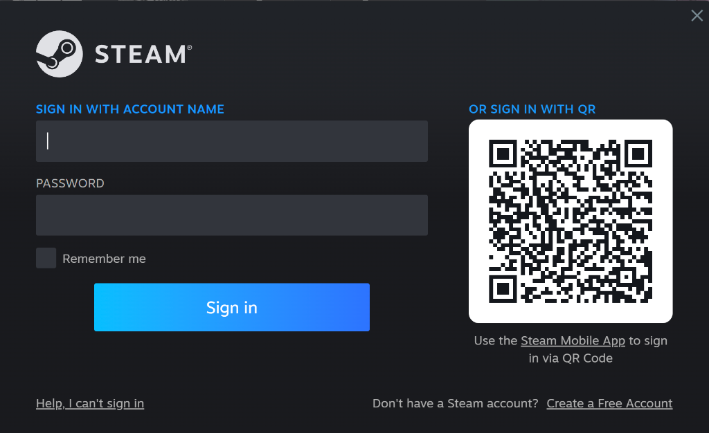
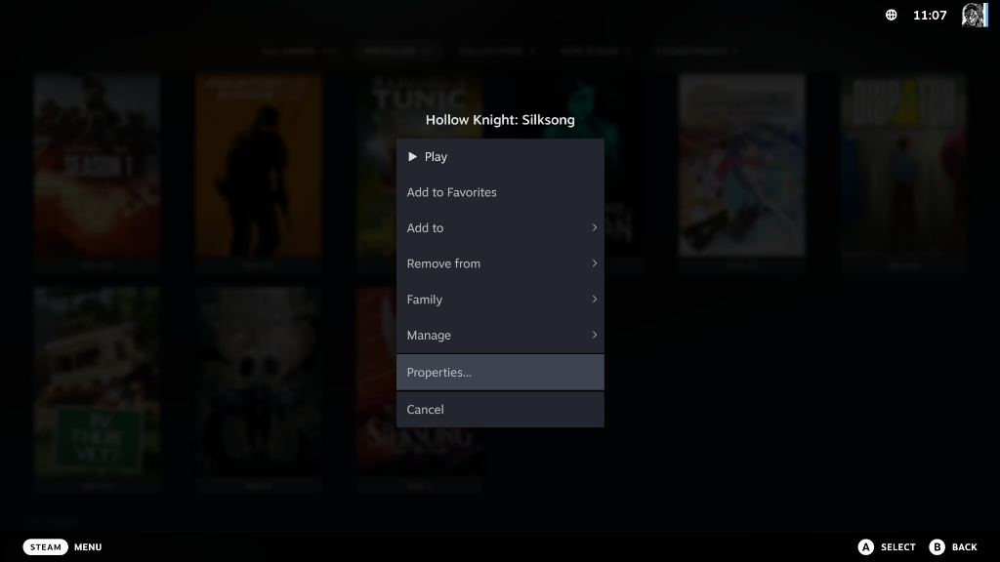
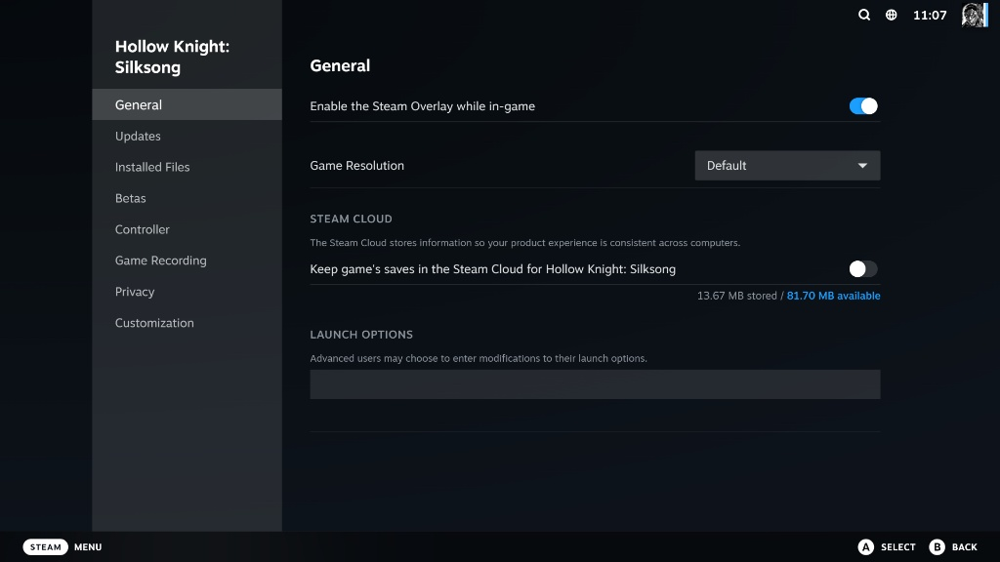
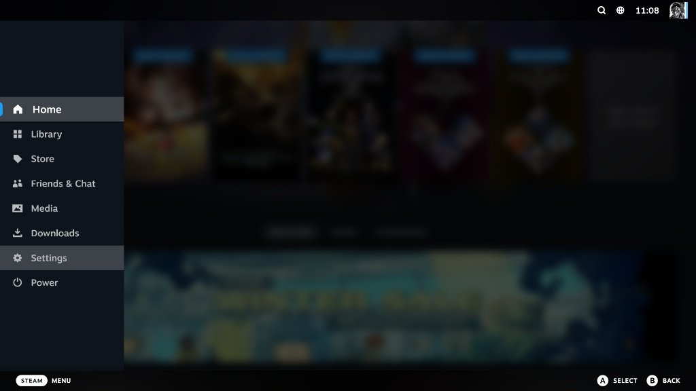
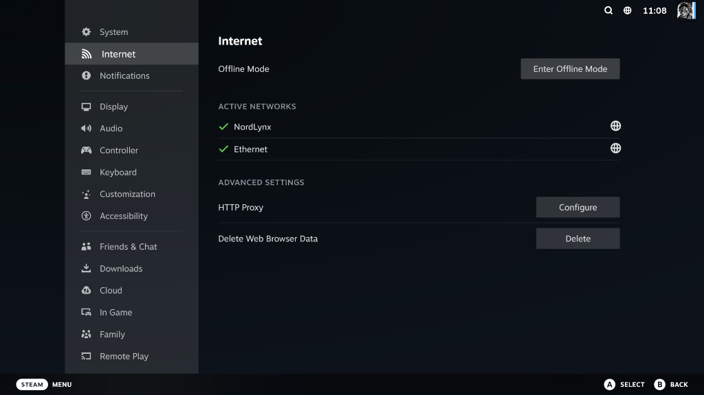

اتبع الخطوات الثلاث بالترتيب لضمان تجربة لعب سلسة وآمنة

استخدم لوحة المفاتيح باللمس أو لوحة مفاتيح خارجية لإدخال البيانات. يرجى التأكد من عدم إضافة أي مسافات إضافية.
اضغط على زر الخيارات (☰) على صورة اللعبة واختر Properties...

في تبويب General، قم بتحويل خيار Steam Cloud إلى وضع الإغلاق (OFF).

اضغط على زر STEAM وتوجه إلى الإعدادات Settings.

توجه لتبويب الإنترنت Internet واضغط على Enter Offline Mode.
